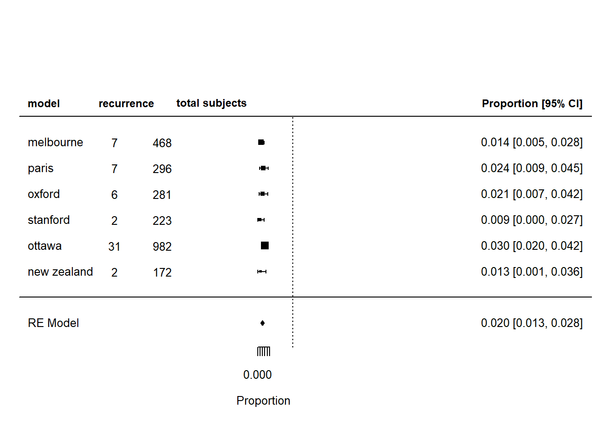

Chapter 5 Peripheral Vertigo
#Sensitiviy=TP/(TP+FN)=100% #Specificity=TN/(TN+FP)=83%
5.0.1 AUC
The area under the receiver operating characteristics (ROC) curve or AUC is a measure of the accuracy of the test.An AUC of 0.5 is classified as no better than by chance; 0.8 to 0.89 provides good (excellent) discrimination, and 0.9 to 1.0 provides outstanding discrimination.51 The standard approach adopted in interpreting AUC may not hold true in the presence of heterogeneity.
5.0.2 Likelihood ratio
Positive likelihood ratio (PLR) is the ratio of sensitivity to false positive rate (FPR); the negative (NLR) likelihood ratio is the ratio of 1-sensitivity to specificity. A PLR indicates the likelihood that a positive spot sign (test) would be expected in a patient with ICH (target disorder) compared with the likelihood that the same result would be expected in a patient without ICH. Using the recommendation by Jaeschke et al, a high PLR (>5) and low NLR (<0.2) indicate that the test results would make moderate changes in the likelihood of hematoma growth from baseline risk. PLRs of >10 and NLRs of <0.1 would confer very large changes from baseline risk.
5.1 Metaanalysis
During journal club, junior doctors are often taught about the importance of metaanalysis. It is worth knowing how to perform a metaanalysis in order to critique the study. This is an important issue as the junior doctor is supervised by someone who a content expert but not necessarily a method expert. Metaanalysis can be performed for clinical trials, cohort studies or diagnostic studies. As an example, it is not well known outside of statistics journal that the bivariate analysis is the preferred method to evaluate diagnostic studies (Reitsma et al. 2005). By contrast, the majority of metaanalysis of diagnostic studies uses the univariate method of Moses and Littenberg (Moses, Shapiro, and Littenberg 1993). This issue will be expanded below.
5.1.1 Quality of study
All studies require evaluation of the quality of the individual studies. This can be done with the QUADAS2 tool, available at https://annals.org/aim/fullarticle/474994/quadas-2-revised-tool-quality-assessment-diagnostic-accuracy-studies.
5.1.2 PRISMA
The PRISMA statement is useful for understanding the search strategy and the papers removed and retained in the metaanalysis. An example of generating the statement is provided below in R. The example given here is from a paper on the use of spot sign to predict enlargment of intracerebral hemorrhage (Phan et al. 2019).
library(PRISMAstatement)
#example from Spot sign paper. Stroke 2019
prisma(found = 193,
found_other = 27,
no_dupes = 141,
screened = 141,
screen_exclusions = 3,
full_text = 138,
full_text_exclusions = 112,
qualitative = 26,
quantitative = 26,
width = 800, height = 800)#https://rich-iannone.github.io/DiagrammeR/graphviz_and_mermaid.html#attributes
library(DiagrammeR)
grViz("
digraph boxes_and_circles {
# a 'graph' statement
graph [overlap = true, fontsize = 10]
# several 'node' statements
node [shape = box,
fontname = Helvetica]
Stroke
node [shape = oval,
fixedsize = false,
color=red,
width = 0.9]
Hypertension; 'No Hypertension'
node [shape= circle,
fontcolor=red,
color=blue,
fixedsize=false]
Hypokalemia; 'No Hypokalemia'
# several 'edge' statements
edge [arrowhead=diamond]
Stroke->{Hypertension, 'No Hypertension'}
Hypertension->{Hypokalemia, 'No Hypokalemia'}
}
")## alternative
grViz("digraph flowchart {
# node definitions with substituted label text
node [fontname = Helvetica, shape = rectangle]
tab1 [label = '@@1']
tab2 [label = '@@2']
tab3 [label = '@@3']
tab4 [label = '@@4']
tab5 [label = '@@5']
# edge definitions with the node IDs
tab1 -> tab3
tab1-> tab2
#tab2->tab3
tab2 -> tab4
tab2-> tab5;
}
[1]: 'Stroke n=19'
[2]: 'Hypertension n=10'
[3]: 'No Hypertension n=9'
[4]: 'Hypokalemia n=?'
[5]: 'No Hypokalemia n=?'
")5.1.3 Conversion of median to mean
One issue with performing metaanalysis is that one paper may report mean and another report median age. The formula for the mean is given by \(\frac{a+2m+b}{4}\) where m is the median, a is the upper and b is the lower range (Wan 2014). The variance is given by \(S^2=\frac{1}{12}(\frac{(a+2m+b)^2}{4}+{(b-a)^2})\). This formula requires examination of the data such as the figure to obtain the upper and lower range. These changes are incorporated into meta libray using meatamean function (Balduzzi, Rcker, and Schwarzer 2019). More recently, investigators suggest to also consider the skewness of the data from the 5 number summary data (Shi et al. 2023). The argument method.mean in function metamean is used to specify the method for estimating the mean. In this case we chose the Luo method for illustration Luo (Luo et al. 2018). See the help page by typing question mark before metamean for more options.
library(meta)
#NIHSS data from ANGEL large core trial in NEJM 2023
metamean(q1=4,q3=20,median=16,n=230, method.mean = "Luo")## Number of observations: o = 230
##
## mean 95%-CI
## 13.1932 [11.6506; 14.7358]
##
## Details:
## - Untransformed (raw) meansHere the same data is used for the McGrath method (McGrath et al. 2020).
## Number of observations: o = 230
##
## mean 95%-CI
## 13.3333 [11.7907; 14.8759]
##
## Details:
## - Untransformed (raw) meansThe conversion from median to mean in metafor is performed using conv.fivenum function (Viechtbauer 2010). There is an update on the metafor page as well as discussion on alternate approach. The default method of this function is to use the methods by Luo (Luo et al. 2018), Wan (Wan 2014) and Shi (Shi et al. 2023)
## Loading required package: numDeriv##
## Loading the 'metafor' package (version 4.2-0). For an
## introduction to the package please type: help(metafor)##
## Attaching package: 'metafor'## The following object is masked from 'package:rms':
##
## vif# example data frame
EstMean <- data.frame(Paper=c(1:4,NA), min=c(1,2,NA,2,NA), q1=c(NA,NA,4,4,NA),
median=c(5,6,6,6,NA), q3=c(NA,NA,10,10,NA),
max=c(12,14,NA,14,NA),
mean=c(NA,NA,NA,NA,7.0), sd=c(NA,NA,NA,NA,4.2),
n=c(30,30,30,30,30))
EstMean## Paper min q1 median q3 max mean sd n
## 1 1 1 NA 5 NA 12 NA NA 30
## 2 2 2 NA 6 NA 14 NA NA 30
## 3 3 NA 4 6 10 NA NA NA 30
## 4 4 2 4 6 10 14 NA NA 30
## 5 NA NA NA NA NA NA 7 4.2 30## Paper min q1 median q3 max mean sd n
## 1 1 1 NA 5 NA 12 5.356748 2.695707 30
## 2 2 2 NA 6 NA 14 6.475664 2.940771 30
## 3 3 NA 4 6 10 NA 6.713000 4.670521 30
## 4 4 2 4 6 10 14 6.882074 3.546379 30
## 5 NA NA NA NA NA NA 7.000000 4.200000 30The estmeansd library uses quantile estimation method with qe.mean.sd function when the data available are the median and quartile ranges (McGrath et al. 2020) (McGrath et al. 2022).The approach here is to use simulation to estimate the parameters.
## Warning: package 'estmeansd' was built under R version 4.3.2#data from ANGEL large core trial in NEJM 2023
res_qe <- bc.mean.sd(q1.val = 13, med.val = 16, q3.val = 20, n = 230)
res_qe ## $est.mean
## [1] 16.92631
##
## $est.sd
## [1] 5.639921The standard error from the mean can be estimated using get_SE function.
## $est.se
## [1] 0.5073234
##
## $boot_means
## [1] 16.91298 16.90853 17.09433 16.57683 16.97555 15.61359 16.46810 16.95345
## [9] 16.67369 17.34119 16.51704 16.32257 17.16601 16.56339 16.92785 16.71134
## [17] 16.50317 16.62432 16.40592 16.18378 16.11571 16.16540 16.04728 16.70697
## [25] 16.98468 17.59378 15.88950 17.55703 15.77593 17.65928 16.47233 15.98141
## [33] 16.74066 16.72071 17.04474 16.82201 17.22417 16.33696 17.41810 16.86214
## [41] 16.76225 16.16070 17.32630 16.33966 17.97560 16.51664 17.17519 17.33979
## [49] 17.32861 17.41842 16.42895 16.64572 17.15604 16.51564 16.46083 16.16985
## [57] 16.28157 15.72409 17.04267 17.00551 17.16831 17.19881 15.35087 17.40812
## [65] 15.95411 17.81191 16.02457 17.55350 15.71506 16.21789 17.28058 17.39602
## [73] 17.29517 16.18167 17.38021 17.82935 16.32018 16.93140 17.51200 16.61574
## [81] 16.60164 17.16808 16.86980 16.07308 16.62801 17.32392 16.72218 16.40921
## [89] 16.73694 16.63135 16.26558 17.05554 17.41512 17.41266 17.26362 17.44546
## [97] 16.91182 16.30892 17.04825 16.68153 16.29094 15.77630 16.83626 17.52944
## [105] 16.69330 16.22146 16.63753 16.77474 16.41404 17.07943 16.54668 16.54907
## [113] 17.21117 16.76900 16.54453 15.73815 16.71881 16.15330 17.37642 17.18159
## [121] 16.07491 16.80031 16.61963 16.29190 16.31712 16.21753 17.01945 16.75593
## [129] 17.29123 17.41848 17.58598 16.96460 16.72491 16.33334 16.63471 16.89622
## [137] 17.48670 16.19331 17.59862 16.59950 16.90980 15.98240 17.78080 17.23864
## [145] 17.35274 16.95850 16.46285 17.25923 16.61085 15.99817 16.12552 16.64750
## [153] 16.90993 16.82695 16.68608 17.37326 15.84709 15.74427 17.08489 16.65951
## [161] 16.76270 16.14012 16.41505 17.06840 16.25884 16.45858 17.43513 16.57611
## [169] 16.52183 16.12541 16.65220 17.33416 16.76404 17.29785 15.79002 16.63252
## [177] 16.64038 16.92376 16.61413 16.83410 16.52333 17.10732 16.34757 17.28468
## [185] 16.80236 16.07104 16.98585 17.00855 16.82659 17.45737 16.33678 16.29284
## [193] 16.49236 16.72220 16.50672 17.01842 17.57745 17.65230 16.26788 17.13491
## [201] 16.23269 15.97722 17.39161 17.46815 17.06070 17.37235 16.52828 16.49216
## [209] 15.81803 17.46839 16.49689 15.84226 16.69623 15.94772 16.30619 16.41739
## [217] 16.87596 16.84590 16.74431 16.17147 16.19884 16.81099 16.63702 16.58055
## [225] 16.55564 16.50826 17.18140 16.68560 17.38944 16.49964 17.44671 16.50051
## [233] 16.60345 16.66515 15.96842 16.53438 16.33691 17.07222 16.77741 16.40612
## [241] 17.76934 17.36932 16.39523 16.86872 16.74775 17.43658 16.32594 16.22013
## [249] 16.17337 17.31186 16.84021 16.66805 16.53766 16.16931 16.95074 17.32285
## [257] 16.60358 16.86261 16.97098 15.92412 17.45050 17.40317 16.95758 17.02317
## [265] 16.31977 16.03305 16.60390 16.71772 16.00710 16.83848 15.91729 16.99080
## [273] 16.52438 16.91988 17.34497 16.68094 16.78166 16.21518 16.00289 17.73592
## [281] 16.63614 16.81291 16.65770 16.04413 16.65026 17.22435 17.27535 17.53137
## [289] 15.91008 16.29745 17.49437 17.20510 16.81318 17.78849 17.19940 15.71299
## [297] 16.53343 16.86961 17.39124 17.15051 16.72247 16.25715 16.99112 17.50117
## [305] 16.66742 16.12802 16.38626 16.42247 16.62353 16.96182 17.52446 16.45844
## [313] 15.61655 16.84673 16.68555 16.60532 17.06508 16.96688 16.17864 17.00296
## [321] 16.79323 15.56236 16.79639 16.63547 17.19694 16.43833 17.33116 16.06864
## [329] 16.82037 17.23045 16.87345 16.74387 16.50447 15.93254 16.77605 16.40756
## [337] 17.39240 16.18023 16.65106 17.70833 15.96355 17.41298 17.02297 16.87353
## [345] 16.76757 16.32297 16.63899 17.35258 15.27614 16.52967 16.54161 18.31067
## [353] 16.59629 16.45417 16.57249 17.05043 16.32874 16.49968 16.55661 16.12516
## [361] 17.95984 16.97028 17.28631 17.07463 16.22937 17.51737 17.94004 16.87993
## [369] 16.66486 16.43071 16.08576 15.86099 17.63638 16.92935 16.82516 16.44484
## [377] 16.59088 16.69546 17.90024 16.82280 16.54481 16.46255 16.44269 16.62213
## [385] 16.66120 16.45327 16.45295 15.71562 16.96784 16.71944 16.56531 16.70148
## [393] 16.25569 17.77594 16.57494 17.31536 17.24230 15.82735 15.65965 16.80455
## [401] 17.14123 17.22903 17.29313 15.77993 17.52467 16.23869 16.89372 17.07855
## [409] 16.35775 16.35556 16.75556 16.69338 16.51928 16.53685 16.61803 16.71430
## [417] 16.94883 16.82727 16.13438 17.21342 17.36097 16.42518 16.33093 16.69866
## [425] 16.65167 16.85634 16.52860 16.87785 15.80992 16.29890 15.84686 16.02212
## [433] 16.75652 17.76634 15.89455 17.31938 17.41020 16.48724 17.32831 17.11362
## [441] 17.33790 16.47262 16.34087 15.97522 16.48252 17.22944 16.54629 16.72686
## [449] 17.04452 16.77778 17.10078 16.40137 17.52438 16.56492 17.21708 17.52747
## [457] 16.39011 17.33655 16.88357 17.00138 16.06343 17.15159 17.30923 16.43827
## [465] 17.46583 16.42142 17.24376 17.32617 17.04523 16.20191 16.99865 17.27973
## [473] 16.95001 17.15276 17.20549 17.37443 15.94905 16.54652 16.61464 16.19186
## [481] 16.24262 16.62786 16.36418 16.56248 17.84523 17.24810 16.12679 16.16223
## [489] 17.12543 18.03913 16.48443 17.26957 16.20724 17.03153 17.57384 16.71576
## [497] 16.71764 16.90372 17.72528 15.42992 16.65760 17.33815 16.40080 17.25528
## [505] 16.20266 16.75726 16.80620 16.37903 15.48262 16.00404 16.60228 16.69424
## [513] 16.21670 16.31607 16.48866 16.98795 17.66010 16.85359 16.99784 16.97433
## [521] 16.91272 16.35276 16.90277 16.06554 17.70205 16.68999 17.01401 16.68802
## [529] 17.03421 17.38969 17.07069 16.38370 16.91962 16.82945 16.86405 16.25718
## [537] 16.99679 16.99574 16.98189 17.57750 16.92966 17.21228 16.70696 15.88967
## [545] 16.52485 16.91406 16.76858 17.31224 17.32050 16.75018 17.28500 16.59019
## [553] 16.73802 17.04746 16.57356 16.97695 17.15181 16.32955 16.05176 16.51976
## [561] 15.99846 16.58664 17.18570 16.28435 17.01377 16.42794 17.02409 16.11113
## [569] 16.86713 17.16380 17.05773 16.47343 17.05452 15.88421 16.80124 16.96385
## [577] 16.14741 16.57313 16.75931 16.60399 16.32460 15.83357 16.51437 17.37134
## [585] 16.81816 16.78199 16.65182 17.29060 16.80976 15.72465 17.33751 16.16924
## [593] 17.23778 17.30806 17.30099 16.63191 16.57408 15.99629 17.64996 16.99542
## [601] 16.85410 17.00105 17.08089 16.96145 16.74222 17.09337 16.60522 17.07742
## [609] 16.57601 17.23152 16.67827 17.66581 16.56395 15.54424 16.38919 16.77824
## [617] 16.45055 17.22670 16.37207 17.38503 17.82531 16.25219 17.14255 16.81564
## [625] 16.27754 16.45904 16.90191 17.07399 16.49265 16.57059 17.35127 17.60921
## [633] 17.26740 16.77620 16.58733 17.11342 16.47094 16.08824 16.98340 16.83620
## [641] 16.49582 16.22602 15.88591 17.33655 16.54931 16.77653 16.67064 16.33689
## [649] 17.61341 16.38730 17.80963 17.07068 16.49871 15.65159 15.77749 16.76400
## [657] 16.34823 16.20598 17.62948 17.43716 17.19307 17.81419 17.79469 17.57132
## [665] 16.63513 17.72611 16.25412 16.27006 17.22207 16.65771 16.91866 16.79540
## [673] 16.97267 16.70388 17.36244 16.61745 16.50524 17.37369 16.24484 17.09856
## [681] 16.62328 17.40999 16.22807 16.23015 17.62696 16.76513 16.92122 17.05247
## [689] 16.35272 16.25275 17.15953 16.38461 17.61930 16.86298 16.60498 17.11591
## [697] 16.83141 16.75330 16.23837 16.16294 15.83203 17.28938 16.22851 16.92256
## [705] 16.91650 16.97942 16.61483 17.21059 16.43033 16.51985 15.86068 17.08171
## [713] 17.09637 17.26733 17.45721 17.14157 17.86027 16.71802 16.02771 17.39536
## [721] 16.03260 16.54930 17.15766 17.26638 16.80281 17.06206 16.33894 17.13242
## [729] 17.58590 16.74257 17.06120 17.15811 17.15032 16.99123 16.05720 16.72823
## [737] 16.21926 17.88577 17.11647 16.87496 16.88941 15.92745 17.10447 16.52779
## [745] 16.40861 17.40415 16.96151 17.10307 17.12066 16.28310 16.88764 17.35918
## [753] 17.59352 16.54751 17.27217 17.73958 16.01396 16.18193 17.12590 16.66710
## [761] 16.75777 16.61733 16.84210 16.23819 18.01050 17.23958 16.99911 17.50160
## [769] 17.19468 16.89151 15.97041 17.05304 17.36737 17.13344 16.17897 16.84960
## [777] 17.29247 17.21119 16.89673 16.22508 16.86835 16.57944 17.26098 17.99122
## [785] 16.61791 17.12666 17.06885 17.30122 17.32340 17.21108 16.48563 17.76656
## [793] 16.40030 16.93045 16.74346 17.10234 17.16507 17.38729 16.01185 16.71757
## [801] 17.06101 16.86823 16.00025 16.83650 18.63407 17.56768 16.43173 16.98646
## [809] 16.16553 15.96435 17.02994 16.19750 16.01544 17.19947 16.69418 16.32558
## [817] 17.10344 16.72457 16.62741 16.30407 16.02726 17.77643 16.97226 17.92825
## [825] 16.13007 17.36678 16.55159 16.84904 17.44553 16.87179 16.45230 16.35363
## [833] 16.04674 17.24010 16.79302 16.49970 17.42217 16.73115 15.81385 17.17101
## [841] 17.61569 16.71444 16.26583 16.65245 16.14630 16.37754 16.55055 16.95460
## [849] 16.79847 17.11825 17.24007 17.39476 16.97695 16.49346 17.03150 16.48683
## [857] 16.47353 16.63217 16.85342 16.46360 16.74828 16.99629 16.69535 16.57515
## [865] 16.76935 16.67142 17.24134 17.46920 16.74002 17.29084 17.46966 16.12670
## [873] 15.82611 16.24378 16.17640 15.91476 16.93656 16.28317 16.72834 16.97649
## [881] 16.51039 17.07338 17.57349 17.59281 16.47434 16.93762 17.79956 16.52902
## [889] 17.23226 17.20828 16.60078 17.24732 16.36920 16.37241 17.35374 16.18915
## [897] 17.06134 17.05393 17.30294 16.18838 16.97166 16.01054 16.85575 16.59463
## [905] 16.09443 16.54498 17.20723 16.30571 16.96484 16.96767 16.08983 16.99699
## [913] 16.99269 16.47018 16.62674 16.29294 15.91110 16.98930 16.33369 16.17063
## [921] 17.57745 16.63884 16.61325 16.38909 16.76588 16.85804 17.15286 16.92994
## [929] 16.68357 17.85888 17.43022 17.32743 16.67197 16.65990 17.11905 17.02093
## [937] 17.36054 16.86633 16.21732 16.62521 17.21607 16.27771 16.93301 16.96971
## [945] 17.01763 16.61441 17.29354 16.61360 16.22141 16.28078 16.54306 17.19657
## [953] 17.27274 17.62143 16.48330 18.08076 16.95252 16.16127 16.40664 17.09938
## [961] 17.28169 17.11969 17.24605 16.69749 17.01036 17.14722 17.12548 15.97472
## [969] 17.32501 16.96917 17.23123 17.25752 16.39292 17.45016 16.66753 17.10775
## [977] 15.69708 16.29669 16.80280 16.59244 16.62106 17.33677 17.07947 17.16806
## [985] 16.97854 17.09298 17.69369 16.73113 15.82574 16.36267 16.32257 16.46708
## [993] 17.35285 16.42647 15.87177 16.68225 17.10389 16.37393 17.23414 16.61883
##
## $boot_sds
## [1] 4.488556 5.115518 6.677701 4.910943 6.020194 4.686233 5.377842 5.451474
## [9] 5.142681 5.657581 5.169681 5.621038 5.960163 5.367810 6.357505 5.311443
## [17] 4.604166 5.270284 5.438915 5.380185 5.693974 4.950258 4.748190 5.614473
## [25] 6.342318 4.936745 4.440365 6.318070 4.948097 5.857856 5.542012 4.859232
## [33] 5.590714 4.786206 5.138864 5.529094 6.340748 5.569066 5.627983 5.168082
## [41] 5.160917 5.291797 5.590264 4.547500 6.981899 5.606836 5.632293 5.527731
## [49] 5.428955 6.321830 4.863305 5.179157 5.390037 5.471646 5.507575 4.741481
## [57] 4.702435 4.732264 5.940498 4.849932 6.191560 5.390263 3.865445 5.703615
## [65] 4.905055 6.801354 5.237165 5.538166 3.955505 5.262217 5.681971 5.106622
## [73] 6.238040 4.381267 5.314565 6.071326 5.415964 5.530395 5.716898 5.070594
## [81] 4.871045 5.081451 5.855231 4.917630 5.464648 5.619299 5.884390 5.575009
## [89] 5.147001 4.984207 5.746596 5.792116 5.932019 5.330451 5.507422 5.617791
## [97] 5.014377 4.800965 5.533231 4.951817 4.250422 5.228714 6.316938 6.296572
## [105] 5.503782 3.815322 5.132135 5.741123 5.474808 5.090550 5.048401 6.636845
## [113] 6.192948 5.533944 4.823795 4.746194 5.085630 4.815950 6.077168 5.148476
## [121] 5.169975 5.096776 5.398323 4.929241 4.825872 4.832618 6.522919 5.522490
## [129] 6.148388 6.814324 6.575441 5.794371 5.472684 5.584917 5.355709 6.559285
## [137] 6.120042 4.948986 5.887800 4.927542 5.329917 3.830710 6.260486 4.855851
## [145] 6.421508 5.308765 6.242238 5.808307 4.721539 5.136304 5.436185 5.346589
## [153] 4.435670 5.392338 5.265736 6.242896 4.617062 4.765069 6.640404 5.467571
## [161] 5.128900 5.597089 5.033209 5.790047 4.903573 4.869911 5.736028 5.653852
## [169] 5.937262 5.348697 5.313384 6.134629 5.425522 6.518981 5.125689 5.331509
## [177] 5.062479 5.154091 4.596432 5.111282 5.872467 5.066172 5.266364 6.094260
## [185] 5.190502 4.815552 5.527359 5.306425 5.537022 5.319786 5.476049 5.123776
## [193] 4.779008 5.552959 5.342837 5.265414 6.215578 5.542528 4.775898 5.112825
## [201] 5.271814 5.078259 5.274831 6.600238 4.577149 5.719936 5.637143 4.986394
## [209] 5.220393 5.667395 4.172950 3.400490 5.340053 4.893753 5.121702 4.984356
## [217] 6.925264 5.146555 5.713164 5.376382 4.841046 5.646028 4.840680 5.275503
## [225] 5.808148 5.438583 5.881024 5.939715 5.932324 4.808199 5.450862 5.554161
## [233] 5.014948 5.726435 5.020471 4.965400 4.851748 5.562999 5.510678 4.695479
## [241] 6.104594 5.894360 5.327997 5.446470 5.398585 6.906735 5.159746 4.953893
## [249] 4.730235 6.060781 5.995623 5.634699 5.357526 4.886792 6.282536 5.432261
## [257] 5.526309 5.962539 5.670825 4.789744 5.104822 6.465233 5.976861 5.291161
## [265] 4.614996 5.285937 5.899879 5.467304 4.867276 5.112046 4.539782 6.456238
## [273] 4.620000 5.277095 5.584096 5.883413 4.732987 4.805130 4.809524 6.074553
## [281] 5.617190 5.291164 4.973516 4.677432 5.544009 5.724253 5.123865 5.983765
## [289] 5.292803 5.155842 5.826674 5.719617 5.443383 5.995017 5.812836 4.691397
## [297] 5.140209 4.810573 6.201248 5.393680 5.436779 5.458452 4.903918 6.490512
## [305] 4.705099 5.452370 5.172321 4.804116 4.923830 5.626164 6.090933 5.324626
## [313] 4.312898 4.921644 5.219454 5.534042 5.442924 5.444779 4.931241 5.808382
## [321] 4.794144 4.182556 4.859475 5.486594 4.880890 5.490017 5.474225 5.264588
## [329] 5.381268 6.191876 5.789154 5.206900 4.903993 4.481171 5.366185 4.786275
## [337] 5.747256 4.684838 4.811847 5.816568 4.531947 6.067816 5.959620 5.129672
## [345] 5.058638 5.812473 4.515317 5.588966 4.598964 4.946516 5.170229 6.474291
## [353] 5.351428 4.904560 4.668726 6.144674 5.284128 5.729312 6.164915 4.952831
## [361] 5.540255 5.764695 5.756262 5.879866 4.725519 4.948034 6.474591 5.462598
## [369] 5.255264 5.481112 5.094900 4.826781 5.932979 5.190815 6.116249 5.044794
## [377] 5.834130 5.723127 5.584719 5.103502 5.230578 5.689046 5.402538 5.215952
## [385] 5.660884 5.023148 4.976516 4.352645 5.448210 5.711369 5.202559 5.338047
## [393] 5.121214 6.740639 4.822314 6.137717 5.397212 4.806007 5.138017 6.081562
## [401] 6.096164 6.284480 6.466448 4.638955 6.121341 5.321375 6.085935 5.459567
## [409] 5.345005 5.367382 4.769193 5.426130 5.426371 5.658770 5.534989 5.080317
## [417] 5.125255 6.204411 5.274673 5.205589 5.670760 5.760046 5.080054 5.102373
## [425] 5.709699 5.968999 4.827465 4.861658 5.205837 5.141905 5.061580 4.608341
## [433] 5.419690 5.822411 4.419193 4.894162 6.439857 5.321326 5.607929 5.647162
## [441] 4.965679 5.313975 4.478213 4.759936 5.523154 5.801001 5.351319 5.520833
## [449] 5.278860 5.333883 5.489964 4.388611 4.898239 5.032192 5.292878 5.674505
## [457] 4.796433 6.391987 5.524981 5.947857 4.127199 6.023391 5.882307 5.194860
## [465] 5.688972 5.335945 5.721068 5.134703 5.131062 5.053085 5.696214 6.464391
## [473] 5.622219 6.263855 5.665337 6.540878 4.433732 5.514707 4.672750 4.947659
## [481] 5.202389 4.883198 5.548197 5.546037 6.662459 6.444481 4.821884 5.174854
## [489] 5.186122 6.301114 4.791394 5.679016 4.990481 5.096796 5.551866 5.205910
## [497] 5.318119 5.221860 5.985928 4.059295 5.282793 6.304678 4.866563 6.533250
## [505] 4.709354 5.178570 5.536063 5.801830 4.558967 4.953910 4.694622 5.204608
## [513] 4.456321 5.289110 5.639315 5.871042 6.438066 6.020713 5.822152 5.054508
## [521] 5.393821 4.800744 5.365707 5.321526 5.334302 5.584371 6.119646 6.321925
## [529] 5.958069 6.661313 5.858276 4.466600 5.637466 5.219801 5.610567 4.753184
## [537] 5.552403 5.260621 5.965260 6.165938 5.407224 5.853232 5.489283 5.345375
## [545] 4.872942 5.341533 4.998999 5.400763 5.593292 5.317444 5.852771 4.308206
## [553] 5.393868 5.848711 5.176280 5.288847 5.081390 4.590318 5.250694 5.751625
## [561] 4.013527 5.031354 5.577921 5.132826 5.460150 5.765912 5.333828 5.103269
## [569] 5.797875 5.790881 6.275205 5.533951 5.526811 4.791798 5.264874 5.854591
## [577] 4.704510 5.409981 4.987803 5.593642 5.487598 5.237270 5.189297 6.035647
## [585] 4.955267 5.721691 5.791294 5.937764 5.195659 4.609097 5.468247 5.154790
## [593] 5.650737 5.531027 6.577881 5.737317 5.516189 4.541218 4.948171 5.753318
## [601] 5.963330 5.480673 5.346145 5.531157 6.189928 5.290051 6.679230 5.794987
## [609] 4.956915 5.565951 5.338420 4.528288 5.258537 3.898685 4.802036 5.724584
## [617] 4.892181 5.754545 4.788348 6.117381 6.336237 4.346698 5.765689 5.533889
## [625] 5.063589 4.535593 4.732608 6.112699 4.978014 5.143341 5.677502 6.469039
## [633] 5.932216 4.839314 4.381429 5.387997 5.613432 5.650590 4.954330 5.140995
## [641] 6.124760 4.867983 4.756723 6.439253 5.723928 5.163019 5.140039 4.447921
## [649] 6.403190 5.019503 6.377261 5.203027 4.576886 3.853584 5.004018 5.335464
## [657] 5.157889 5.050703 6.490591 5.605401 5.801394 7.099767 6.145283 5.921717
## [665] 5.281586 6.351395 4.697878 5.386764 4.983402 5.565476 5.784003 5.591986
## [673] 5.881856 4.969986 5.897412 4.973985 4.980733 5.860834 4.714025 5.414656
## [681] 5.821720 5.374171 4.744669 5.081879 5.483742 4.923202 6.062603 5.645168
## [689] 4.576235 5.088132 6.022585 5.182732 5.974627 4.185593 5.262388 5.482750
## [697] 5.633032 6.054829 4.839123 4.824863 3.691263 5.099956 4.915540 5.276795
## [705] 4.972539 5.593565 5.142974 5.541632 5.346160 5.086258 4.451699 5.921252
## [713] 6.495357 6.836653 5.821097 6.803448 6.205857 5.751090 5.144730 5.181682
## [721] 5.601837 5.515392 5.450852 5.773995 5.179196 5.286688 5.546246 5.768539
## [729] 5.828251 5.892213 5.378160 5.675412 4.981531 5.261070 5.103458 5.267762
## [737] 4.795551 6.352176 4.883582 5.083738 4.831993 4.130153 5.515321 5.279804
## [745] 4.835766 5.444737 5.570099 5.399796 6.084081 5.276664 5.384525 5.686795
## [753] 6.018505 5.318668 5.987073 6.421436 4.785418 4.881267 6.015447 5.836257
## [761] 5.194703 5.433647 5.351227 5.265425 5.701444 5.803428 5.239948 5.660835
## [769] 5.495112 5.669792 5.460783 5.519729 5.803418 6.079811 4.719309 5.090677
## [777] 5.360115 5.767737 4.848573 5.007903 5.346089 4.632799 5.417052 6.541462
## [785] 5.406485 4.842858 6.237114 5.993394 6.374162 6.178365 4.935437 5.572808
## [793] 5.181693 5.503510 4.970303 5.431456 6.296988 6.127907 5.216137 4.986601
## [801] 5.107514 4.810472 4.455616 4.910561 7.219258 6.213509 5.092915 5.778945
## [809] 5.382695 4.191058 4.838334 4.808482 5.247912 6.157059 5.643068 5.426416
## [817] 5.990358 5.472334 5.286569 5.398725 5.279144 5.297970 5.594868 6.508510
## [825] 5.073660 6.422177 5.008074 5.124083 5.452169 4.613618 5.664472 5.129695
## [833] 4.891085 5.580830 5.122050 5.008106 6.280140 5.896832 4.430647 5.163353
## [841] 6.328527 4.876530 6.113499 4.767114 4.897626 5.289341 4.952033 5.861519
## [849] 5.724361 5.797027 5.580682 6.307537 5.387557 5.285601 5.538355 5.108724
## [857] 5.037060 5.081046 4.865990 4.969961 5.626096 5.269964 5.178360 6.126397
## [865] 5.375080 4.982739 5.253001 5.872051 5.769318 6.073197 6.100830 5.270890
## [873] 4.610585 5.424236 5.267290 5.131689 5.274021 5.147989 5.533046 6.350522
## [881] 4.868041 5.730731 5.684804 5.713285 5.338413 5.624368 6.666533 6.217542
## [889] 5.745039 5.862620 5.614047 5.631682 5.715783 5.730407 7.078323 4.426748
## [897] 5.301688 5.359635 4.772156 5.136121 5.034287 4.968247 5.335877 5.566686
## [905] 4.749318 5.728927 6.333481 4.680878 4.910309 5.196868 4.409221 5.537938
## [913] 5.238329 5.103273 5.173404 4.460578 5.433104 5.251256 5.192905 5.767198
## [921] 6.105169 5.018312 4.673944 5.550070 5.337624 5.624313 5.888874 6.195796
## [929] 4.798070 5.302319 5.302781 6.269656 5.019686 5.226363 5.999480 5.494312
## [937] 5.954038 5.747248 5.204755 5.879493 5.594463 5.166677 5.090545 5.319970
## [945] 5.664234 5.579716 6.022464 4.330535 5.354694 4.963348 5.155668 6.142701
## [953] 5.326997 5.939317 5.410148 6.677315 5.568868 5.772791 4.964340 5.954671
## [961] 6.173607 5.512194 5.719461 4.967055 5.380351 5.493493 5.572322 5.602991
## [969] 5.970015 4.825215 6.433093 5.881889 5.302589 6.011244 4.759587 6.927944
## [977] 4.084606 4.640661 4.941781 5.763525 5.844066 5.761051 5.462515 5.034868
## [985] 5.646427 6.090747 6.718234 4.620299 4.837669 6.513101 5.853619 5.667286
## [993] 6.142637 5.082508 4.508123 4.895958 5.280435 4.810317 5.382192 5.361682The estmeansd library uses Box-Cox method for estimating mean and sd when the data available are the median, minimum and maximum values.
## $est.mean
## [1] 16.60927
##
## $est.sd
## [1] 3.507002Again, the standard error from the mean can be estimated using get_SE function.
## $est.se
## [1] 0.3103951
##
## $boot_means
## [1] 16.81689 16.54118 16.83591 17.08903 16.60743 16.78550 16.67040 16.66814
## [9] 16.49781 16.28889 17.07760 16.31180 16.30338 17.12701 16.63034 16.77945
## [17] 16.82680 16.91302 16.38650 17.17427 16.34140 16.68231 16.63028 16.94632
## [25] 16.66412 17.04029 16.56124 16.71948 16.33776 16.65881 17.30935 17.24873
## [33] 16.93039 16.97769 16.40755 16.45193 16.41810 16.59425 16.97842 16.92482
## [41] 16.59991 16.36732 16.68151 16.36309 16.37371 16.99987 16.73639 17.26656
## [49] 17.43484 16.42238 17.08724 16.52106 16.33860 16.20771 16.55487 16.14968
## [57] 17.38910 16.92004 16.53649 16.28389 16.55374 16.26881 16.71104 17.06236
## [65] 16.72963 16.65487 16.62158 15.98194 16.81550 16.88921 16.92290 16.39333
## [73] 16.58451 16.71362 16.62784 17.36690 16.34488 16.96831 16.41778 17.16934
## [81] 16.86343 17.06312 16.92283 17.17427 16.67124 16.52965 17.03692 16.92613
## [89] 16.82218 17.29634 16.77077 17.10915 16.57327 17.03632 16.36205 16.76448
## [97] 16.37419 16.81032 16.62934 16.49599 16.50754 16.34792 16.47648 16.93462
## [105] 16.71806 16.98814 16.73070 16.47012 16.82757 16.57529 17.15485 16.88836
## [113] 16.45574 16.82212 16.56450 16.83018 16.51187 16.70853 16.83023 16.50635
## [121] 17.07009 17.06029 16.75579 16.43610 16.34598 16.81034 16.57934 16.17699
## [129] 16.38846 16.54669 16.48630 16.56931 16.97824 16.44985 16.48017 16.95827
## [137] 17.55300 16.75027 16.67918 16.71287 16.53340 16.40820 16.95148 16.90229
## [145] 16.82413 16.60296 16.93588 16.57703 16.30502 16.62967 16.80580 16.95645
## [153] 16.60623 17.34101 16.46079 16.89899 16.38082 16.54038 16.22486 16.50893
## [161] 16.94425 16.03485 16.86967 16.50033 17.18445 17.18152 16.28993 17.00394
## [169] 16.74892 16.69269 16.51240 17.26019 16.48156 16.73274 16.71520 16.45445
## [177] 16.77959 16.70594 16.41087 16.26128 16.38710 16.55182 17.20794 16.70264
## [185] 16.79130 16.36409 17.13751 16.41333 17.37328 16.56526 16.45787 16.66369
## [193] 16.59853 16.94627 16.66179 17.14338 16.84729 17.05371 16.53562 16.62376
## [201] 16.95437 17.05141 16.82221 16.51968 16.92136 16.29877 17.35433 17.19726
## [209] 16.85094 16.65351 16.78619 16.86446 16.89998 16.87013 16.54571 16.30694
## [217] 16.08404 16.35216 16.24506 16.97063 16.63671 16.51933 17.44162 16.79679
## [225] 16.95344 16.64958 16.87441 16.76887 16.90847 16.96317 17.35174 16.31856
## [233] 16.39803 16.63174 17.21148 16.85385 16.60665 16.59852 16.89643 16.55163
## [241] 16.57308 17.27970 17.01444 16.54602 16.62444 16.98748 16.74810 16.83555
## [249] 16.50951 16.60357 16.25119 16.83091 17.19991 16.98697 16.74758 17.08786
## [257] 16.74888 16.70747 16.81899 16.54297 16.91804 16.41206 16.89257 16.41991
## [265] 16.81832 17.13248 15.97456 16.57396 16.60465 16.89683 16.27640 16.36268
## [273] 16.24099 17.28677 16.93929 16.92276 16.56542 16.45228 16.40390 16.72591
## [281] 16.28983 17.01078 16.75944 16.66044 17.06163 16.95147 16.83052 17.27644
## [289] 16.91408 17.42264 16.62338 16.97218 16.46247 16.55242 16.68721 16.47360
## [297] 16.90505 16.56636 16.49294 16.61914 16.73462 16.44631 17.07701 16.71896
## [305] 16.99847 16.99380 17.23027 17.01982 17.02710 17.64264 17.11164 16.89438
## [313] 16.51900 16.74275 17.24882 16.92264 16.27058 16.51311 16.87565 16.50334
## [321] 16.37561 16.70791 16.51707 16.47106 16.14606 17.10276 16.75157 16.86271
## [329] 16.59485 16.93701 17.11422 16.67266 16.84109 17.28302 16.65356 16.50043
## [337] 16.94916 16.58789 17.29666 16.56854 16.57145 16.31360 16.50378 17.01490
## [345] 16.82949 16.12799 17.15145 17.51498 16.58058 16.75701 16.40539 16.91918
## [353] 16.60949 16.95753 16.43299 16.61223 16.51214 16.88067 16.47312 16.91805
## [361] 16.79857 16.76002 16.87880 16.32193 16.12433 16.45153 17.01528 16.96216
## [369] 17.11814 16.62297 17.19200 16.55630 16.27629 16.58532 16.70962 16.73317
## [377] 17.16203 16.52699 16.44049 17.13433 17.22433 17.31475 16.70415 16.96404
## [385] 17.10139 16.86387 16.81274 16.63717 16.76337 17.01511 16.90675 16.45012
## [393] 16.70123 16.79849 16.51667 16.33564 16.88662 16.72420 16.90413 16.72627
## [401] 16.84602 16.43194 17.28916 16.92736 17.00998 17.28386 16.13786 16.78975
## [409] 16.61351 16.99030 16.72235 17.12543 16.95745 16.61899 16.61028 16.56473
## [417] 16.69601 16.88984 16.82741 16.45344 16.84452 17.25452 16.47532 16.63393
## [425] 16.78364 16.25021 16.64531 16.53407 16.64887 16.69022 16.94435 16.75520
## [433] 16.62494 16.38884 16.77821 16.16566 16.68320 16.28975 16.57379 16.41426
## [441] 17.21788 17.21611 17.18290 16.78870 16.79968 16.69082 16.93946 16.79891
## [449] 16.82568 16.92890 17.18867 17.16466 17.15087 16.66080 16.98866 16.19171
## [457] 16.25162 16.38896 16.67536 16.19792 16.65254 16.71226 17.06369 16.76591
## [465] 16.58089 16.51765 17.01977 16.96850 16.69482 16.35851 16.75703 17.54810
## [473] 16.19770 16.88174 16.59567 16.97789 16.70787 16.51396 16.65980 16.81834
## [481] 16.76270 17.02981 16.86764 17.09732 16.39618 16.51895 17.10294 17.19723
## [489] 17.17639 16.91184 17.05140 16.51754 17.18673 16.81415 16.62273 16.77265
## [497] 16.69471 17.38301 17.35312 16.69414 16.72193 16.64146 17.25210 16.29418
## [505] 16.86113 16.62010 17.19698 17.40793 16.59833 17.05715 17.12206 16.78069
## [513] 17.20274 16.41354 17.30235 16.48176 16.19275 16.67980 16.51992 16.33491
## [521] 16.44606 16.36809 16.19767 16.56866 16.80605 16.72996 16.08564 16.51695
## [529] 16.37214 16.53631 16.78865 16.95978 16.79459 16.42484 16.87213 16.55581
## [537] 16.62569 16.93457 16.65971 17.08366 17.42278 16.85759 16.77904 16.28878
## [545] 16.75711 16.30864 16.89844 17.07582 16.91922 17.20979 16.77103 16.99403
## [553] 16.46389 16.80446 17.30540 17.48105 16.62618 16.44333 16.89742 16.80149
## [561] 16.24629 16.32295 16.26435 15.89176 16.49389 16.37217 16.43457 16.55042
## [569] 16.30141 16.35696 17.09030 17.08617 17.02640 16.26506 16.74675 16.54154
## [577] 17.11951 16.42955 16.36155 16.71529 16.15385 16.66981 16.90137 16.89964
## [585] 16.70676 17.40436 16.59844 16.88212 16.65427 16.71125 16.98869 17.27674
## [593] 16.84356 16.87265 17.16648 16.93747 16.63351 16.53894 16.31490 16.67056
## [601] 16.94964 17.07392 16.83578 16.86959 16.52725 16.49118 17.06903 17.19403
## [609] 16.51122 16.56799 16.98230 17.16616 16.80375 16.28583 17.15472 16.34487
## [617] 16.62713 16.13850 16.78980 16.73509 16.49859 16.70415 16.14937 16.43124
## [625] 16.90451 16.60584 16.50519 16.43067 16.88783 16.56604 15.86029 17.23219
## [633] 17.17123 16.49376 16.24963 16.68406 16.63057 16.96264 16.73802 17.13686
## [641] 16.33575 16.57656 16.62997 16.32673 16.80562 16.09679 16.57845 16.96470
## [649] 16.67936 16.95292 16.49995 16.56435 16.90460 16.57726 16.56879 16.62907
## [657] 17.28923 16.54158 16.67942 16.42897 16.27212 17.00404 16.52721 16.69638
## [665] 16.39606 16.57358 16.46334 16.63942 16.52492 16.46388 16.24919 17.12360
## [673] 16.99930 17.03010 16.79899 17.02785 16.21218 16.64030 17.30830 16.28541
## [681] 16.86026 16.66830 16.67266 16.89949 16.91235 16.95906 16.55228 16.75188
## [689] 16.93674 17.01201 17.42355 16.53261 16.66536 16.45309 16.32729 16.79839
## [697] 16.48690 17.17142 16.99201 16.73778 16.56113 16.73218 16.48749 16.76838
## [705] 16.79506 16.89975 16.74626 16.92266 16.76832 16.61334 17.30650 16.93616
## [713] 17.16080 16.42876 16.56918 17.00670 16.56796 16.96006 16.64112 16.62842
## [721] 16.98679 16.56348 16.71839 16.26579 16.76306 16.78757 17.10737 16.65452
## [729] 16.66290 16.55014 16.68238 16.63884 16.96149 16.38444 16.39820 17.14677
## [737] 16.98990 16.16804 16.36440 16.75427 16.75684 16.31262 16.44193 16.89947
## [745] 16.70219 16.88347 16.60478 17.14118 16.60856 16.44335 16.52013 17.12727
## [753] 16.46701 16.63294 17.06023 17.15645 16.63833 16.63998 17.34271 16.98714
## [761] 16.78068 17.23701 16.59669 16.99704 16.53335 16.74400 17.17162 16.66049
## [769] 16.17002 17.19511 16.48225 16.51451 16.42992 17.03405 16.35529 16.49427
## [777] 16.52849 16.65462 16.74398 16.84352 15.77799 16.35328 16.54589 16.84919
## [785] 16.67235 17.01808 16.87213 16.35879 16.75662 17.17653 16.59800 16.62241
## [793] 16.81967 16.89892 16.88301 17.20074 16.24751 16.59539 16.80739 16.88571
## [801] 16.47198 16.58638 16.88364 16.83519 16.98525 16.36968 16.39706 16.62544
## [809] 16.43615 17.11359 16.35580 16.48333 16.51161 17.35907 16.23456 16.91707
## [817] 16.72964 17.13363 17.29247 17.24506 16.61401 16.74815 16.95614 16.96187
## [825] 16.43033 16.28794 16.74005 16.84656 16.12572 17.19490 17.36501 16.31870
## [833] 16.85512 17.36953 17.32903 16.40977 17.01536 16.96142 16.64677 16.82986
## [841] 16.74547 17.23691 16.94332 16.89974 16.50074 16.45264 16.88246 16.63426
## [849] 16.95425 16.76507 16.33268 16.61258 16.56154 16.44106 16.40806 16.72954
## [857] 16.51087 16.64747 16.93651 16.29408 16.97326 16.76743 16.14519 16.64712
## [865] 17.08386 16.84595 16.69139 16.55031 16.09474 16.41957 16.28850 16.54358
## [873] 16.84700 17.11537 15.93954 16.79433 16.40695 16.78738 16.65702 17.16136
## [881] 16.99275 16.39644 16.35252 17.25330 16.19613 17.20570 17.11912 16.43872
## [889] 16.37341 16.39264 17.11593 16.83819 16.26922 16.92868 16.95370 16.47590
## [897] 16.74359 16.80434 16.42501 17.52753 17.05914 17.62362 16.35966 16.73419
## [905] 16.88491 16.41593 16.17185 17.30105 16.97165 17.02104 16.71634 16.82313
## [913] 16.52257 16.82866 16.59246 17.39556 16.70553 16.19592 16.82652 16.73366
## [921] 17.14204 16.37814 16.87321 16.56570 16.52076 16.99499 16.54697 16.39316
## [929] 16.87806 16.95429 16.92331 16.90315 16.46399 16.58284 16.07794 16.82227
## [937] 17.47496 16.39697 16.30911 16.41711 17.37223 16.60623 16.41147 17.06558
## [945] 17.08320 17.03998 16.25358 16.67809 16.93954 16.56246 16.54216 16.97022
## [953] 16.38133 17.16879 16.11701 17.35754 16.96931 16.94949 16.31919 16.65755
## [961] 17.22159 17.00895 16.84823 16.29109 17.31909 16.37798 16.85317 16.66239
## [969] 16.74757 16.76213 16.99806 16.96846 16.52170 16.66510 17.43745 16.80061
## [977] 16.56840 17.27148 16.41677 16.60612 16.90557 16.53623 16.69677 17.23198
## [985] 16.76395 16.87782 16.18437 16.88688 16.94035 16.64391 16.86890 16.90236
## [993] 16.47578 16.64273 16.62778 16.67611 16.92154 16.80235 17.18213 16.57582
##
## $boot_sds
## [1] 2.977657 2.948711 4.029888 3.306427 3.477744 3.687203 3.303041 3.031091
## [9] 3.675007 3.241351 3.658029 2.776776 3.598632 3.393120 3.639831 3.558986
## [17] 2.759986 3.425352 3.387304 3.639836 3.140300 3.144404 3.361870 3.209035
## [25] 3.612692 4.049930 3.302820 3.352680 2.931694 3.751732 4.525578 3.797086
## [33] 3.684305 3.537447 3.412851 3.512824 3.707596 3.810095 3.837812 3.736617
## [41] 2.966389 3.160049 4.206174 3.553701 2.948171 3.382599 3.879255 4.802856
## [49] 4.571816 4.027141 3.859038 2.966561 3.419499 3.554879 3.403403 3.069112
## [57] 4.048188 3.936657 3.933806 3.817358 3.815669 3.865733 3.816241 4.507103
## [65] 4.280176 3.038317 3.240005 3.288645 3.568915 3.361880 3.698053 3.639351
## [73] 3.275411 3.134031 3.508454 3.904428 3.135777 3.929594 3.313061 3.605794
## [81] 3.999072 4.291302 3.204515 4.058840 3.911576 4.110227 3.447241 3.661501
## [89] 3.591402 3.964087 3.693630 3.788154 3.911727 3.357761 3.211411 3.444416
## [97] 3.359443 3.744602 3.025970 3.937610 4.059184 3.235166 4.011687 3.765737
## [105] 3.999551 3.835037 3.825098 3.401074 4.151194 3.036934 3.991084 4.001598
## [113] 3.098875 4.032140 3.242120 3.325291 3.335379 3.186796 3.528722 4.182920
## [121] 3.880523 3.492336 3.531367 3.057616 3.356899 3.741026 3.026980 3.021808
## [129] 3.556800 3.653895 3.384460 3.304661 3.671149 3.175136 3.140277 3.490102
## [137] 4.696431 3.725607 3.139818 3.030687 2.943117 3.681257 3.972671 3.711743
## [145] 3.553346 3.034560 3.227115 3.353245 3.048805 3.845027 3.946249 3.540108
## [153] 3.701612 3.497032 3.365974 3.207087 3.238879 3.540186 2.582465 3.507724
## [161] 3.918307 3.317895 3.317130 3.595734 4.514730 3.754287 2.856610 3.227920
## [169] 3.750374 3.130255 3.438846 3.834118 3.028240 3.705721 3.904883 3.545127
## [177] 4.321294 3.083990 3.182758 3.571814 3.311000 4.335869 3.741162 3.098777
## [185] 3.589485 2.909330 3.899717 3.282597 2.931239 3.142233 3.619408 4.066343
## [193] 3.499554 3.248171 3.511099 3.238543 3.485790 3.377505 3.354073 3.441821
## [201] 4.213407 4.009507 2.774490 3.381436 3.466208 3.056712 3.922000 3.452075
## [209] 3.618867 3.689117 3.763537 3.250025 3.696676 3.854145 4.314947 3.135106
## [217] 3.029334 3.802836 2.783558 3.978199 3.148161 3.436586 3.706662 2.977698
## [225] 3.440386 3.205838 3.318864 3.612385 4.016079 3.334904 4.458301 3.184440
## [233] 3.078044 3.794755 3.648053 3.092040 3.195393 3.121159 3.653089 3.109276
## [241] 3.281383 3.533126 4.000841 4.132736 3.140906 3.618409 3.816730 3.581757
## [249] 3.634197 3.210484 2.918333 4.033306 4.484864 3.217050 3.364654 3.665985
## [257] 3.364991 3.142790 3.680177 2.959287 3.502857 3.048529 3.457474 3.637320
## [265] 3.047625 3.877048 2.921501 3.557339 3.256553 3.912976 3.292405 3.143235
## [273] 3.305232 3.752231 3.425209 3.131676 3.248623 3.193880 3.319291 4.000928
## [281] 3.328471 4.167925 3.347660 3.122122 3.750756 3.725012 3.843075 3.980278
## [289] 3.026468 3.942394 3.435732 3.591183 3.103606 2.832281 3.884041 3.024109
## [297] 3.479953 3.252644 3.158315 3.280751 3.591063 3.565640 3.491281 3.533426
## [305] 3.722051 3.830532 3.630741 4.084427 3.577517 4.354901 4.048870 3.512208
## [313] 3.642424 3.021572 3.288874 3.469900 3.286899 3.473524 3.236308 3.529314
## [321] 3.516337 3.559464 3.810704 3.708630 2.641407 3.572005 3.224782 3.867442
## [329] 3.611857 3.815635 3.161810 3.514749 3.708565 3.589781 3.324140 3.534126
## [337] 2.923108 3.318391 4.389072 2.850784 3.855473 3.076599 3.396754 3.455102
## [345] 3.716477 3.099944 4.062843 4.532502 3.338233 4.297150 3.452120 3.565424
## [353] 2.892181 4.030561 3.561835 3.335327 2.986425 3.445139 3.223030 3.431029
## [361] 3.363777 3.578585 3.278555 3.846177 2.911341 3.119923 3.518347 3.357001
## [369] 4.097828 2.938648 3.745868 3.344795 3.181810 2.435616 3.578899 3.799151
## [377] 3.920779 3.048613 3.134709 3.586483 3.836271 4.217365 3.517687 3.666120
## [385] 3.396053 3.999786 3.326961 3.297503 3.284782 3.370856 2.970436 3.796126
## [393] 3.396145 3.264562 4.047318 3.188795 3.268037 3.265665 4.651163 4.173324
## [401] 4.046493 3.597377 4.029744 3.352006 4.020991 4.425521 3.088846 3.525879
## [409] 3.603371 3.809488 2.867235 4.224856 3.650828 3.714183 4.183553 3.484997
## [417] 3.503274 3.046759 3.271030 3.349174 3.534379 3.542479 3.604344 3.699698
## [425] 3.473898 3.356952 3.474739 3.108854 3.518771 3.021786 3.389818 3.328685
## [433] 3.379651 4.000149 3.361281 3.402386 3.320940 3.225765 3.426450 3.307275
## [441] 4.260574 3.932128 3.781449 3.737140 4.141580 3.898878 4.380969 3.501729
## [449] 3.253729 3.499006 3.308629 3.847077 3.518921 3.161679 3.572041 3.122960
## [457] 3.607243 3.274641 3.172271 3.581096 3.392655 3.167860 3.442629 3.471707
## [465] 3.458439 3.498770 4.251661 3.410304 3.373386 3.433172 4.039808 3.671132
## [473] 2.825668 3.296868 3.626837 3.470123 3.709668 2.995225 3.037746 3.531247
## [481] 3.843048 3.834986 3.613383 3.748940 3.280307 3.362670 3.230488 3.681607
## [489] 3.687564 3.033682 3.563662 3.365948 3.514946 2.935283 3.263674 3.563904
## [497] 3.894661 4.150499 4.292075 3.560734 3.801954 3.207106 4.133321 3.492571
## [505] 3.735007 3.582795 3.944335 5.538125 3.376440 4.217021 3.525033 3.609037
## [513] 3.765524 3.679383 3.503180 3.288385 3.394491 3.499872 3.686196 3.604337
## [521] 3.780444 3.062298 3.376834 3.428093 3.611268 3.425891 3.059234 3.124311
## [529] 3.472787 4.461546 3.212318 3.957506 3.738182 3.125408 3.229762 3.327604
## [537] 4.148739 3.117520 3.200871 3.512277 3.880423 3.574830 3.533053 3.158189
## [545] 3.194383 3.464163 4.180520 4.216870 3.866178 4.860228 3.713160 3.569828
## [553] 2.869395 3.107407 3.521816 3.872697 3.278826 3.070815 4.466773 3.672913
## [561] 3.598715 3.665969 3.356686 3.288956 3.267708 3.504429 3.509947 3.189813
## [569] 3.206837 3.461712 3.127089 3.275100 3.170302 3.711096 3.253732 3.810037
## [577] 3.246426 3.337972 3.292006 3.890325 3.674525 2.900457 3.968330 3.802392
## [585] 3.619045 4.380548 3.297468 3.156624 2.935583 3.704465 4.392812 4.304861
## [593] 3.710049 4.274067 3.652375 4.339716 3.659414 3.500296 3.521811 3.490992
## [601] 3.381382 3.539902 3.495679 3.531099 2.825621 3.555087 3.961466 4.070273
## [609] 3.707620 3.525457 4.450575 4.213432 3.933997 3.095425 3.830815 2.897047
## [617] 3.312047 2.953427 3.089269 4.298598 3.353492 4.036756 3.025163 2.981449
## [625] 3.822064 3.278206 3.743402 3.270637 3.650796 3.456718 3.658761 3.518929
## [633] 3.772027 3.186224 3.190829 3.806065 3.595199 3.522301 3.709396 4.352139
## [641] 3.693331 3.615126 3.852987 3.470969 2.817057 3.380019 3.285836 3.053996
## [649] 2.966107 3.541286 2.981184 3.791197 3.433388 4.302168 4.096652 3.408384
## [657] 4.017949 3.395756 3.768041 3.228368 2.617617 4.571332 2.999838 3.774587
## [665] 3.430887 3.826709 3.226511 3.608612 3.032775 3.372608 3.072232 3.729756
## [673] 3.872914 3.612765 3.309434 3.501154 3.504063 3.584269 4.412597 3.259112
## [681] 3.466257 4.103275 3.958797 3.175913 3.803364 3.514376 3.865311 3.716917
## [689] 3.418824 3.488010 3.299841 3.203230 3.819918 3.108002 3.132257 3.146998
## [697] 3.003670 3.446234 3.857071 3.739876 3.598481 3.200597 3.189743 2.996668
## [705] 4.562174 4.309905 3.049365 3.668096 3.830638 3.301274 3.878592 3.118126
## [713] 3.805628 3.108984 3.762962 3.479775 3.351696 3.699123 3.360814 2.960911
## [721] 3.621160 3.352494 3.411214 3.543324 3.094000 3.318477 3.462998 3.366207
## [729] 3.689727 3.819522 3.397386 3.405986 3.825901 3.232830 3.623356 4.241528
## [737] 4.237386 3.354268 3.127907 3.774321 4.094999 3.379070 3.595186 4.079334
## [745] 4.155801 4.154666 3.577104 3.420732 3.666795 3.174853 3.049920 3.596272
## [753] 3.348483 3.581257 4.065525 3.222767 3.243548 3.712606 3.616980 3.807714
## [761] 3.396308 3.186056 3.409805 3.275975 3.817943 3.003020 3.722074 3.765382
## [769] 3.851408 4.682154 3.523777 3.427405 3.277637 3.565124 3.185735 3.954229
## [777] 3.957419 3.850108 2.993315 3.818274 3.366328 3.567882 3.489287 3.537668
## [785] 3.309510 3.963799 3.258820 3.347003 3.032412 3.556202 3.632865 3.508788
## [793] 3.592574 3.033845 3.586614 3.998473 3.955348 3.524944 3.210739 3.417902
## [801] 3.459034 3.986874 3.636683 4.288425 3.947184 3.246089 3.355854 3.404296
## [809] 3.769999 3.736230 4.057680 3.392558 3.529506 3.735074 3.201584 3.419748
## [817] 3.496539 3.774229 3.389359 3.595764 3.070923 3.343186 3.488464 3.551889
## [825] 3.075907 2.705380 3.527976 3.143479 3.155243 3.804914 3.940989 3.283633
## [833] 3.596765 4.649160 4.249595 3.247884 3.865391 4.483193 2.857248 3.400442
## [841] 3.773764 4.261713 3.854782 3.811377 3.624355 3.595072 4.271953 3.469040
## [849] 4.441256 3.169204 3.410913 2.962742 3.299289 3.926187 3.827938 3.559126
## [857] 3.653356 3.419117 3.654281 3.239247 3.229254 3.508524 3.227451 4.117270
## [865] 3.950457 4.045927 3.245044 3.368885 4.019533 3.937810 3.140700 3.040605
## [873] 3.272873 3.288341 2.987384 3.188921 3.150659 3.147897 3.057644 3.231348
## [881] 3.084671 2.904930 3.166362 3.959920 3.734831 4.197295 4.338266 3.006510
## [889] 3.230755 3.582269 3.658006 3.983460 3.257007 3.447861 2.853506 2.833416
## [897] 3.993571 3.412478 3.363156 4.202008 3.486326 4.089769 3.550543 3.742778
## [905] 3.062433 3.272134 3.905980 3.624861 3.450136 4.170177 3.796811 4.159346
## [913] 3.647267 3.448982 3.730542 3.630931 3.533112 3.310881 3.360415 3.177361
## [921] 3.298030 3.878536 4.105490 3.909238 4.372899 3.522691 3.376883 3.683181
## [929] 3.968563 3.870463 3.580109 3.983443 3.441586 4.374808 3.668526 4.156495
## [937] 4.264492 3.460079 3.340863 3.265003 4.052677 4.258393 3.464676 3.389645
## [945] 4.143392 3.692750 3.377926 3.583801 3.503953 3.645469 2.999079 3.541241
## [953] 3.377771 4.360010 3.548342 3.719063 3.934283 3.560668 3.210323 3.241819
## [961] 4.612073 3.604667 3.192705 3.329416 3.627538 3.251388 3.136743 3.458803
## [969] 3.052356 3.825000 4.610258 3.165646 3.355923 3.986002 4.111924 3.547895
## [977] 3.032145 3.271065 3.307655 3.212582 3.618015 3.500301 3.434435 3.469042
## [985] 3.402438 3.486046 3.347748 3.677789 4.226980 3.141622 3.369949 3.386558
## [993] 3.636336 3.370662 3.302226 3.289011 3.232439 3.301547 4.539433 3.8586175.1.4 Inconsistency I2
The inconsistency \(I^2\) index is the sum of the squared deviations from the overall effect and weighted by the study size. Value <25% is classified as low and greater than 75% as high heterogeneity. This test can be performed using metafor package (Viechtbauer 2010). The presence of high \(I^2\) suggests a need to proceed to meta-regression on the data to understand the source of heterogeneity. The fixed component were the covariates which were being tested for their effect on heterogeneity. The random effect components were the sensitivity and FPR. The \(I^2\) value for the TIA clinic study is 34.41%. As such meta-regression is not needed for that study. By contrast, the \(I^2\) is much higher for the spot sign study, necessitating metaregression.
5.1.5 Metaanalysis of proportion
This is an example of metaanalysis of stroke recurrence following management in rapid TIA clinic. A variety of different methods for calculating the 95% confidence interval of the binomial distribution. The mean of the binomial distribution is given by p and the variance by \(\frac{p \times (1-p)}{n}\). The term \(z\) is given by \(1-\frac{\alpha}{2}\) quantile of normal distribution. A standard way of calculating the confidence interval is the Wald method \(p\pm z\times \sqrt{\frac{p \times(1-p)}{n}}\). The Freeman-Tukey double arcsine transformation tries to transform the data to a normal distribution. This approach is useful when occurence of event is rare. The exact or Clopper-Pearson method is suggested as the most conservative of the methods for calculating confidence interval for proportion. It is based on cumulative properties of the binomial distribution. The Wilson method has similarities to the Wald method. It has an extra term \(z^2/n\). There are many different methods for calculating the confidence interval for proportions. Investigators such as Agresti proposed that approximate methods are better than exact method (Agresti and Coull 1998). Brown and colleagues proposed the use of the Wilson method (Brown, Cai, and DasGupta 2001)
library(metafor) #open software metafor
#create data frame dat
#xi is numerator
#ni is denominator
dat <- data.frame(model=c("melbourne","paris","oxford","stanford","ottawa","new zealand"),
xi=c(7,7,6,2,31,2),
ni=c(468,296, 281,223,982,172))
#calculate new variable pi base on ratio xi/ni
dat$pi <- with(dat, xi/ni)
#Freeman-Tukey double arcsine trasformation
dat <- escalc(measure="PFT", xi=xi, ni=ni, data=dat, add=0)
res <- rma(yi, vi, method="REML", data=dat, slab=paste(model))
#create forest plot with labels
metafor::forest(res, transf=transf.ipft.hm, targs=list(ni=dat$ni), xlim=c(-1,1.4),refline=res$beta[1],
cex=.8, ilab=cbind(dat$xi, dat$ni),
#position of data on x-axis
ilab.xpos=c(-.6,-.4),digits=3)
#par function combine multiple plots into one
op <- par(cex=.75, font=2)
#position of column names on x-axis
text(-1.0, 7.5, "model ",pos=4)
text(c(-.55,-.2), 7.5, c("recurrence", " total subjects"))
text(1.4,7.5, "Proportion [95% CI]", pos=2)
Exact 95% confidence interval for proportion is provided below using the TIA data above. This solution was provided on stack overflow. This is performed using the binomial.test function.
#exact confidence interval
sapply(split(dat, dat$model), function(x) binom.test(x$xi, x$ni)$conf.int)## melbourne new zealand ottawa oxford paris stanford
## [1,] 0.00603419 0.001411309 0.02154780 0.007875285 0.00955965 0.001087992
## [2,] 0.03057375 0.041370853 0.04451101 0.045893259 0.04811612 0.032020390The data needs to be transposed using t function. This generates one column for lower and another for upper CI. Note that sapply returns a matrix or array and the column names have to be assigned.
## [,1] [,2]
## melbourne 0.006034190 0.03057375
## new zealand 0.001411309 0.04137085
## ottawa 0.021547797 0.04451101
## oxford 0.007875285 0.04589326
## paris 0.009559650 0.04811612
## stanford 0.001087992 0.03202039The exact confidence is now put back into the dat data frame.
dat$ci.lb <- tmp[,1] #adding column to data frame dat
dat$ci.ub <- tmp[,2] #adding column to data frame dat
dat <- escalc(measure="PFT", xi=xi, ni=ni, data=dat, add=0)
res <- rma.glmm(measure="PLO", xi=xi, ni=ni, data=dat)
#insert the exact confidence interval
with(dat, metafor::forest(yi, ci.lb=ci.lb, ci.ub=ci.ub,
ylim=c(-1.5,8.5),
xlim=c(-1.1,1),
refline=predict(res, transf=transf.ilogit)$pred,
cex=.8,
ilab=cbind(dat$xi, dat$ni),
ilab.xpos=c(-.6,-.2),digits=3))
op <- par(cex=.75, font=2)
addpoly(res, row=-1, transf=transf.ilogit)
abline(h=0)
#position of column names on x-axis
text(-.9, 7.5, "Model", pos=2)
text(c(-.55,-.2), 7.5, c("recurrence", " total subjects"))
text( 1, 7.5, "Proportion [95% CI]", pos=2)
5.1.6 Metaanalysis of continuous data
Metanalysis of continuous outcome data can be performed using standardised mean difference or ratio of means. It is available in the meta library using metacont function (Balduzzi, Rcker, and Schwarzer 2019).
5.1.7 Bivariate Metaanalysis
The univariate method of Moses-Shapiro-Littenberg combines these measures (sensitivity and specificity) into a single measure of accuracy (diagnostic odds ratio)(Moses, Shapiro, and Littenberg 1993) . This approach has been criticized for losing data on sensitivity and specificity of the test. Similar to the univariate method, the bivariate method employs a random effect to take into account the within study correlation (Reitsma et al. 2005). Additionally, the bivariate method also accounts for the between-study correlation in sensitivity and specificity. Bivariate analysis is performed using mada package. A Bayesian library for bivariate analysis meta4diag is illustrated later.
The example below is taken from a metaanalysis of spot sign as predictor expansion of intracerebral hemorrhage (Phan et al. 2019). The data for this analysis is available in the Data-Use sub-folder.
## Loading required package: ellipse##
## Attaching package: 'ellipse'## The following object is masked from 'package:graphics':
##
## pairs## Loading required package: mvmeta## This is mvmeta 1.0.3. For an overview type: help('mvmeta-package').##
## Attaching package: 'mvmeta'## The following object is masked from 'package:metafor':
##
## blup## The following object is masked from 'package:meta':
##
## blup## The following object is masked from 'package:checkmate':
##
## qtest##
## Attaching package: 'mada'## The following object is masked from 'package:metafor':
##
## forest## The following object is masked from 'package:meta':
##
## forest#spot sign data
Data<-read.csv("./Data-Use/ss150718.csv")
#remove duplicates using subset
#another way is to use filter from dplyr
Dat<-subset(Data, Data$retain=="yes")
(ss<-reitsma(Dat))## Call: reitsma.default(data = Dat)
##
## Fixed-effects coefficients:
## tsens tfpr
## (Intercept) 0.2548 -1.9989
##
## 27 studies, 2 fixed and 3 random-effects parameters
## logLik AIC BIC
## 52.0325 -94.0650 -84.1201## Call: reitsma.default(data = Dat)
##
## Bivariate diagnostic random-effects meta-analysis
## Estimation method: REML
##
## Fixed-effects coefficients
## Estimate Std. Error z Pr(>|z|) 95%ci.lb 95%ci.ub
## tsens.(Intercept) 0.255 0.152 1.676 0.094 -0.043 0.553 .
## tfpr.(Intercept) -1.999 0.097 -20.664 0.000 -2.189 -1.809 ***
## sensitivity 0.563 - - - 0.489 0.635
## false pos. rate 0.119 - - - 0.101 0.141
## ---
## Signif. codes: 0 '***' 0.001 '**' 0.01 '*' 0.05 '.' 0.1 ' ' 1
##
## Variance components: between-studies Std. Dev and correlation matrix
## Std. Dev tsens tfpr
## tsens 0.692 1.000 .
## tfpr 0.400 -0.003 1.000
##
## logLik AIC BIC
## 52.033 -94.065 -84.120
##
## AUC: 0.858
## Partial AUC (restricted to observed FPRs and normalized): 0.547
##
## I2 estimates
## Zhou and Dendukuri approach: 10.2 %
## Holling sample size unadjusted approaches: 64.2 - 79.9 %
## Holling sample size adjusted approaches: 4.7 - 5 %## $AUC
## [1] 0.8576619
##
## $pAUC
## [1] 0.5474316
##
## attr(,"sroc.type")
## [1] "ruttergatsonis"## Mean Median 2.5% 97.5%
## posLR 4.750 4.700 3.820 5.820
## negLR 0.494 0.495 0.409 0.579
## invnegLR 2.040 2.020 1.730 2.450
## DOR 9.750 9.560 6.800 13.8005.1.8 Metaanalysis of clinical trial.
Fixed effect (Peto or Mantel-Haenszel) approaches assume that the population is the same for all studies and thus each study is the source of error. Random effect (DerSimonian Laird) assumes an additional source of error between studies.The random effect approach results in more conservate estimate of effect size confidence interval. A criticism of DerSimnonian and Laird approach is that it is prone to type I error especially when the number of number of studies is small (n<20) or moderate heterogeneity. Its estimated that 25% of the significant findings with DerSimonian Laird method may be non-significant with Hartung-Knapp method (BMC Medical Research Methodology 2014, 14:25). The Hartung-Knapp method (Stat Med 2001;20:3875-89) estimate the between studies variance and treat it as fixed. It employs quantile of t-distribution rather than normal distribution. The Hartung-Knapp method is available in meta and metafor package.
The data is from Jama Cardiology on Associations of Omega-3 Fatty Acid Supplement Use With Cardiovascular Disease Risks Meta-analysis of 10 Trials Involving 77917 Individuals (Aung T 2018). Subsequently a meta-analysis (Hu 2019) reported that contrary to the earlier meta-analysis, Omega-3 lowers the risk of cardiovascular diseases with effect related to dose. The analysis using DerSimonian Laird and Hartung Knapp method is illustrated below.
## Attaching core tidyverse packages tidyverse 2.0.0
## forcats 1.0.0 readr 2.1.4
## lubridate 1.9.2 tidyr 1.3.0
## purrr 1.0.1
## Conflicts tidyverse_conflicts()
## purrr::%@%() masks rlang::%@%()
## rlang:::=() masks data.table:::=()
## dplyr::between() masks data.table::between()
## readr::col_factor() masks scales::col_factor()
## dplyr::collapse() masks nlme::collapse()
## gridExtra::combine() masks dplyr::combine()
## matrixStats::count() masks dplyr::count()
## dplyr::data_frame() masks tibble::data_frame(), vctrs::data_frame()
## dplyr::dim_desc() masks pillar::dim_desc()
## purrr::discard() masks scales::discard()
## tidyr::expand() masks Matrix::expand()
## tidyr::extract() masks magrittr::extract()
## dplyr::filter() masks stats::filter()
## dplyr::first() masks data.table::first()
## purrr::flatten() masks jsonlite::flatten(), rlang::flatten()
## purrr::flatten_chr() masks rlang::flatten_chr()
## purrr::flatten_dbl() masks rlang::flatten_dbl()
## purrr::flatten_int() masks rlang::flatten_int()
## purrr::flatten_lgl() masks rlang::flatten_lgl()
## purrr::flatten_raw() masks rlang::flatten_raw()
## lubridate::hour() masks data.table::hour()
## purrr::invoke() masks rlang::invoke()
## lubridate::isoweek() masks data.table::isoweek()
## dplyr::lag() masks stats::lag()
## dplyr::last() masks data.table::last()
## rlang::ll() masks Metrics::ll()
## rlang::local_options() masks withr::local_options()
## purrr::map() masks listenv::map()
## lubridate::mday() masks data.table::mday()
## lubridate::minute() masks data.table::minute()
## lubridate::month() masks data.table::month()
## tidyr::pack() masks Matrix::pack()
## lubridate::quarter() masks data.table::quarter()
## lubridate::second() masks data.table::second()
## dplyr::select() masks MASS::select()
## purrr::set_names() masks rlang::set_names(), magrittr::set_names()
## readr::spec() masks mada::spec()
## purrr::splice() masks rlang::splice()
## dplyr::src() masks Hmisc::src()
## cli::style_bold() masks pillar::style_bold()
## dplyr::summarize() masks Hmisc::summarize()
## purrr::transpose() masks data.table::transpose()
## cli::tree() masks xfun::tree()
## jsonlite::unbox() masks rlang::unbox()
## tidyr::unpack() masks Matrix::unpack()
## jsonlite::validate() masks rms::validate()
## lubridate::wday() masks data.table::wday()
## lubridate::week() masks data.table::week()
## rlang::with_options() masks withr::with_options()
## lubridate::yday() masks data.table::yday()
## lubridate::year() masks data.table::year()
## Use the conflicted package (<http://conflicted.r-lib.org/>) to force all conflicts to become errorslibrary(metafor)
#Omega 3 data
Year=c(2010,2014,2010,2007,2010,2010,2013,2008,2012,1999)
Trials=c("DOIT","AREDS-2","SU.FOL.OM3","JELIS","Alpha Omega","OMEGA","R&P","GISSI-HF","ORIGIN","GISSI-P")
Treatment=c(29,213,216,262,332,534,733,783,1276,1552)
Treatment.per=c(10.3,9.9,17.2,2.8,13.8,27.7,11.7,22.4,20.3,27.4)
Control=c(35,208,211,324,331,541,745,831,1295,1550)
Control.per=c(12.5,10.1,16.9,3.5,13.6,28.6, 11.9,23.9,20.7,27.3)
#combine into data frame
rct<-data.frame(Year,Trials,Treatment,Treatment.per,Control,Control.per) %>%
mutate(Treatment.number=round(Treatment*100/Treatment.per,0),
Control.number=round(Control*100/Control.per,0)) %>%
rename(ai=Treatment,n1i=Treatment.number,ci=Control,
n2i=Control.number,study=Trials,year=Year)
#peto's fixed effect method
res <- rma.peto(ai=ai, n1i=n1i, ci=ci, n2i=n2i, data=rct)
print(res, digits=2)##
## Equal-Effects Model (k = 10)
##
## I^2 (total heterogeneity / total variability): 0.00%
## H^2 (total variability / sampling variability): 0.93
##
## Test for Heterogeneity:
## Q(df = 9) = 8.36, p-val = 0.50
##
## Model Results (log scale):
##
## estimate se zval pval ci.lb ci.ub
## -0.04 0.02 -1.72 0.08 -0.08 0.00
##
## Model Results (OR scale):
##
## estimate ci.lb ci.ub
## 0.97 0.93 1.00result<-predict(res, transf=exp, digits=2)
#forest plot
metafor::forest(res, targs=list(study=rct$study),
main="RCT of Omega3 fatty acid for cardiovascular disease-Peto")
The funnel plot is used here to illustrate presence or absence publication bias. In this case the funnel plot reflects the same findings as the low \(I^2\) value. There is one outlier. We will explore this further with the GOSH plot below.

Random effect (DerSimonian Laird) assumes an additional source of error between studies when calculating odds ratio.
#DL
datO3 <- escalc(measure = "OR",ai=ai, n1i=n1i, ci=ci, n2i=n2i,data=rct)
res.DL<-rma(yi,vi, method = "DL",data=datO3)
metafor::forest(res.DL,main="RCT of Omega3 fatty acid for cardiovascular disease-DL")
DerSimonian Laird method may not be appropriate for metaanalysis with small number of studies . The recommendation is to use the Hartung Knapp random effect method. This analysis show that inspite of the small sample size the significant findings remain.
#Hartung-ignore error message
res.HK<-rma.uni(yi,vi=1/vi,method="FE",knha=TRUE,data=datO3)
metafor::forest(res.HK,main="RCT of Omega3 fatty acid for cardiovascular disease-HK")
Subgroup analysis is one way of exploring the data for group effect. Metaregression is illustrated later.
#create subgroups for Omega 3 trial based on year of publication
rct1<-rct[1:5,]
rct2<-rct[6:10,]
rct1$group[rct1$year>=1999]<-"wide"
rct2$group[rct2$year>=1999]<-"narrow"
rct3<-rbind(rct1,rct2)
datO3$group<-rct3$group
#plot subgroups
res.group <- rma(yi, vi, mods = ~ group, data=datO3)
res.wide<- rma(yi, vi, subset=(group=="wide"), data=datO3)
res.wide##
## Random-Effects Model (k = 5; tau^2 estimator: REML)
##
## tau^2 (estimated amount of total heterogeneity): 0.0069 (SE = 0.0127)
## tau (square root of estimated tau^2 value): 0.0831
## I^2 (total heterogeneity / total variability): 38.46%
## H^2 (total variability / sampling variability): 1.62
##
## Test for Heterogeneity:
## Q(df = 4) = 5.9601, p-val = 0.2022
##
## Model Results:
##
## estimate se zval pval ci.lb ci.ub
## -0.0676 0.0611 -1.1077 0.2680 -0.1873 0.0520
##
## ---
## Signif. codes: 0 '***' 0.001 '**' 0.01 '*' 0.05 '.' 0.1 ' ' 1##
## Random-Effects Model (k = 5; tau^2 estimator: REML)
##
## tau^2 (estimated amount of total heterogeneity): 0 (SE = 0.0018)
## tau (square root of estimated tau^2 value): 0
## I^2 (total heterogeneity / total variability): 0.00%
## H^2 (total variability / sampling variability): 1.00
##
## Test for Heterogeneity:
## Q(df = 4) = 1.6888, p-val = 0.7928
##
## Model Results:
##
## estimate se zval pval ci.lb ci.ub
## -0.0266 0.0229 -1.1609 0.2457 -0.0715 0.0183
##
## ---
## Signif. codes: 0 '***' 0.001 '**' 0.01 '*' 0.05 '.' 0.1 ' ' 1#https://stackoverflow.com/questions/39392706/using-the-r-forestplot-package-
#is-there-a-way-to-assign-variable-colors-to-boxe
#confidence interval
rmeta_conf <-
structure(list(
mean = c(NA, NA, exp(-0.0676), exp(-0.0266), NA, exp(-0.0352)),
lower = c(NA, NA, exp(-0.1873), exp(-0.0715), NA, exp(-0.0753)),
upper = c(NA, NA, exp(0.0520), exp(0.0183), NA, exp(0.0049))),
.Names = c("mean", "lower", "upper"),
row.names = c(NA, -6L),
class = "data.frame")
#table data
tabletext<-cbind(c("","Trials","wide","narrow",NA,"Summary"),
c("Events","(Drugs)",sum(filter(datO3,group=="wide")$ai),
sum(filter(datO3,group=="narrow")$ai),NA,NA),
c("Events","(Control)",sum(filter(datO3,group=="wide")$ci),
sum(filter(datO3,group=="narrow")$ci),NA,NA),
c("","OR","0.934","0.974",NA,"0.965")
)
#use forestplot as another library to perform forest plot
library(forestplot)## Loading required package: abind forestplot(tabletext,
rmeta_conf,new_page = TRUE,
is.summary=c(TRUE,TRUE,rep(FALSE,8),TRUE),
clip=c(0.1,2.5),
xlog=TRUE,
col=fpColors(box="royalblue",line="darkblue", summary="royalblue"))
Baujat plot is another method in addition to funnel plot explore heterogeneity
# adjust margins so the space is better used
par(mar=c(5,4,2,2))
# create Baujat plot to explore source of heterogeneity
baujat(res.DL, xlim=c(0,20), ylim=c(0,0.2))
GOSH plot explores study heterogeneity using output of fixed effect model for all possible subsets
## Fitting 1023 models (based on all possible subsets).### create GOSH plot
### red points for subsets that include and blue points
### for subsets that exclude study 16 (the ISIS-4 trial)
plot(sav, out=dim(rct)[1], breaks=100)
5.1.9 Metaregression
#separate metaregression for tsens and tfpr
#tsens - setting single or multicentre for spot sign metaanalysis
dat1<-subset(Dat, Dat$result_id==1 )
(metass<-reitsma(dat1, formula = cbind(tsens,tfpr)~PubYear+Study.type+Setting+Quality.assessment)) ## Call: reitsma.default(data = dat1, formula = cbind(tsens, tfpr) ~ PubYear +
## Study.type + Setting + Quality.assessment)
##
## Fixed-effects coefficients:
## tsens tfpr
## (Intercept) 298.7348 -164.8603
## PubYear -0.1484 0.0828
## Study.typeRetro 0.3554 -0.1489
## SettingSingle 0.2283 -0.1301
## Quality.assessment -0.0040 -0.0834
##
## 26 studies, 10 fixed and 3 random-effects parameters
## logLik AIC BIC
## 48.5386 -71.0771 -45.7109## Call: reitsma.default(data = dat1, formula = cbind(tsens, tfpr) ~ PubYear +
## Study.type + Setting + Quality.assessment)
##
## Bivariate diagnostic random-effects meta-regression
## Estimation method: REML
##
## Fixed-effects coefficients
## Estimate Std. Error z Pr(>|z|) 95%ci.lb 95%ci.ub
## tsens.(Intercept) 298.735 143.547 2.081 0.037 17.387 580.083
## tsens.PubYear -0.148 0.071 -2.078 0.038 -0.288 -0.008
## tsens.Study.typeRetro 0.355 0.310 1.146 0.252 -0.253 0.963
## tsens.SettingSingle 0.228 0.495 0.462 0.644 -0.741 1.198
## tsens.Quality.assessment -0.004 0.050 -0.081 0.936 -0.102 0.094
## tfpr.(Intercept) -164.860 80.574 -2.046 0.041 -322.783 -6.938
## tfpr.PubYear 0.083 0.040 2.066 0.039 0.004 0.161
## tfpr.Study.typeRetro -0.149 0.172 -0.865 0.387 -0.486 0.188
## tfpr.SettingSingle -0.130 0.276 -0.471 0.638 -0.672 0.412
## tfpr.Quality.assessment -0.083 0.026 -3.190 0.001 -0.135 -0.032
##
## tsens.(Intercept) *
## tsens.PubYear *
## tsens.Study.typeRetro
## tsens.SettingSingle
## tsens.Quality.assessment
## tfpr.(Intercept) *
## tfpr.PubYear *
## tfpr.Study.typeRetro
## tfpr.SettingSingle
## tfpr.Quality.assessment **
## ---
## Signif. codes: 0 '***' 0.001 '**' 0.01 '*' 0.05 '.' 0.1 ' ' 1
##
## Variance components: between-studies Std. Dev and correlation matrix
## Std. Dev tsens tfpr
## tsens 0.657 1.000 .
## tfpr 0.297 0.312 1.000
##
## logLik AIC BIC
## 48.539 -71.077 -45.711
##
##
## I2 estimates
## Zhou and Dendukuri approach: 0 %
## Holling sample size unadjusted approaches: 66.8 - 80.5 %
## Holling sample size adjusted approaches: 5.4 - 5.8 %#tfpr - setting single or multicentre for spot sign metaanalysis
dat1<-subset(Dat, Dat$result_id==1 )
(metassfull<-reitsma(dat1, formula = cbind(tsens,tfpr)~
PubYear+clinical+Study.type+CTA6hrs+Setting+Quality.assessment)) ## Call: reitsma.default(data = dat1, formula = cbind(tsens, tfpr) ~ PubYear +
## clinical + Study.type + CTA6hrs + Setting + Quality.assessment)
##
## Fixed-effects coefficients:
## tsens tfpr
## (Intercept) 297.5416 -144.2754
## PubYear -0.1480 0.0724
## clinical -0.4703 -0.1810
## Study.typeRetro 0.4884 -0.0989
## CTA6hrsyes -0.2141 -0.2342
## SettingSingle 0.2568 -0.1435
## Quality.assessment 0.0130 -0.0738
##
## 26 studies, 14 fixed and 3 random-effects parameters
## logLik AIC BIC
## 48.4477 -62.8955 -29.7243## Call: reitsma.default(data = dat1, formula = cbind(tsens, tfpr) ~ PubYear +
## clinical + Study.type + CTA6hrs + Setting + Quality.assessment)
##
## Bivariate diagnostic random-effects meta-regression
## Estimation method: REML
##
## Fixed-effects coefficients
## Estimate Std. Error z Pr(>|z|) 95%ci.lb 95%ci.ub
## tsens.(Intercept) 297.542 150.543 1.976 0.048 2.482 592.601
## tsens.PubYear -0.148 0.075 -1.977 0.048 -0.295 -0.001
## tsens.clinical -0.470 0.333 -1.411 0.158 -1.124 0.183
## tsens.Study.typeRetro 0.488 0.321 1.523 0.128 -0.140 1.117
## tsens.CTA6hrsyes -0.214 0.322 -0.665 0.506 -0.845 0.417
## tsens.SettingSingle 0.257 0.495 0.519 0.604 -0.714 1.228
## tsens.Quality.assessment 0.013 0.051 0.255 0.799 -0.087 0.113
## tfpr.(Intercept) -144.275 82.720 -1.744 0.081 -306.403 17.852
## tfpr.PubYear 0.072 0.041 1.761 0.078 -0.008 0.153
## tfpr.clinical -0.181 0.187 -0.969 0.333 -0.547 0.185
## tfpr.Study.typeRetro -0.099 0.177 -0.558 0.577 -0.446 0.249
## tfpr.CTA6hrsyes -0.234 0.177 -1.322 0.186 -0.581 0.113
## tfpr.SettingSingle -0.144 0.274 -0.524 0.600 -0.680 0.393
## tfpr.Quality.assessment -0.074 0.027 -2.774 0.006 -0.126 -0.022
##
## tsens.(Intercept) *
## tsens.PubYear *
## tsens.clinical
## tsens.Study.typeRetro
## tsens.CTA6hrsyes
## tsens.SettingSingle
## tsens.Quality.assessment
## tfpr.(Intercept) .
## tfpr.PubYear .
## tfpr.clinical
## tfpr.Study.typeRetro
## tfpr.CTA6hrsyes
## tfpr.SettingSingle
## tfpr.Quality.assessment **
## ---
## Signif. codes: 0 '***' 0.001 '**' 0.01 '*' 0.05 '.' 0.1 ' ' 1
##
## Variance components: between-studies Std. Dev and correlation matrix
## Std. Dev tsens tfpr
## tsens 0.650 1.000 .
## tfpr 0.285 0.188 1.000
##
## logLik AIC BIC
## 48.448 -62.895 -29.724
##
##
## I2 estimates
## Zhou and Dendukuri approach: 0 %
## Holling sample size unadjusted approaches: 66.8 - 80.5 %
## Holling sample size adjusted approaches: 5.4 - 5.8 %Plot year against tsens from metaregression
#using output from spot sign
library(ggplot2)
library(lubridate)
ssr<-as.data.frame(ss$residuals)
#convert character to year
ssr$Year<-as.Date(as.character(Dat$PubYear),"%Y")
ssr$Quality<-Dat$Quality.assessment
ggplot(ssr, aes(x=ssr$Year,y=ssr$tsens))+geom_point()+
scale_x_date()+geom_smooth(method="lm")+
ggtitle("Relationship between transformed sensitivity and Publication Year")+
labs(x="Year",y="transformed sensitivity")## `geom_smooth()` using formula = 'y ~ x'
5.1.9.1 summary Positive and Negative Likelihood Ratio
Positive likelihood ratio (PLR) is the ratio of sensitivity to false positive rate (FPR); the negative (NLR) likelihood ratio is the ratio of 1-sensitivity to specificity. A PLR indicates the likelihood that a positive spot sign (test) would be expected in a patient with target disorder compared with the likelihood that the same result would be expected in a patient without target disorder. Using the recommendation by Jaeschke et al(Jaeschke, Guyatt, and Sackett 1994) a high PLR (>5) and low NLR (<0.2) indicate that the test results would make moderate changes in the likelihood of hematoma growth from baseline risk. PLRs of >10 and NLRs of <0.1 would confer very large changes from baseline risk. The pooled likelihood ratios were used to calculate post-test odds according to Bayes Theorem and post-test probabilities of outcome after a positive test result for a range of possible values of baseline risk.
Data from likelihood ratio can be used to create Fagans normogram.
#The code for this is available at
#"https://raw.githubusercontent.com/achekroud/nomogrammer/master/nomogrammer.r"
library(nomogrammer)
p<-nomogrammer(Prevalence = .234, Plr = 4.85, Nlr = 0.49)
p+ggtitle("Fagan's normogram for Spot Sign and ICH growth")
#ggsave(p,file="Fagan_SpotSign.png",width=5.99,height=3.99,units="in")5.2 Data simulation
Data simulation is an important aspects of data science. The example below is taken from our experience trying to simulate data from recent clot retrieval trials in stroke (Berkhemer et al. 2015) (Campbell et al. 2015). Simulation is performed using simstudy library.
library (simstudy)
library(tidyverse)
#T is Trial
def <- defData(varname = "T", dist = "binary", formula = 0.5)
#early neurological improvement (ENI) .37 in TPA and .8 in ECR
#baseline NIHSS 13 in TPA and 17 in ECR
def <- defData(def, varname = "ENI", dist = "normal", formula = .8-.53*T, variance = .1)
#baseline NIHSS 13 in TPA and 17 in ECR
def <- defData(def, varname = "Y1", dist = "normal", formula=13, variance = 1)
def <- defData(def, varname = "Y2", dist = "normal", formula = "Y1*ENI - 5 * T >5",variance = 1)
def <- defData(def, varname = "Y3", dist = "normal", formula = "Y2- 4*T>2",variance = 1)
def <- defData(def, varname = "Y4", dist = "normal", formula = "Y3- 2*T>0", variance = 1)
#male
def <- defData(def,varname = "Male", dist = "binary", formula = 0.49*T)
#diabetes .23 in TPA and .06 in ECR
def <- defData(def,varname = "Diabetes", dist = "binary", formula = .23-.17*T)
#HT .66 TPA vs .6 ECR
def <- defData(def,varname = "HT", dist = "binary", formula = .66-.06*T)
#generate data frame
dtTrial <- genData(500, def)
#define parameter for mRS
#Add conditional column with field name "mRS"
dtTime <- addPeriods(dtTrial, nPeriods = 4, idvars = "id",
timevars = c("Y1", "Y2", "Y3","Y4"), timevarName = "Y")
dtTime## id period T ENI Male Diabetes HT Y timeID
## 1: 1 0 1 0.08497377 1 1 1 13.0944630 1
## 2: 1 1 1 0.08497377 1 1 1 0.3909726 2
## 3: 1 2 1 0.08497377 1 1 1 0.2251096 3
## 4: 1 3 1 0.08497377 1 1 1 0.4786882 4
## 5: 2 0 0 0.28274961 1 0 1 13.8000867 5
## ---
## 1996: 499 3 1 0.44367220 0 0 1 -0.4258901 1996
## 1997: 500 0 1 0.22602569 0 0 1 11.7526971 1997
## 1998: 500 1 1 0.22602569 0 0 1 -0.2192132 1998
## 1999: 500 2 1 0.22602569 0 0 1 1.5931418 1999
## 2000: 500 3 1 0.22602569 0 0 1 -1.4191069 2000##
## Welch Two Sample t-test
##
## data: Y1 by T
## t = -0.40402, df = 497.8, p-value = 0.6864
## alternative hypothesis: true difference in means between group 0 and group 1 is not equal to 0
## 95 percent confidence interval:
## -0.2136914 0.1407967
## sample estimates:
## mean in group 0 mean in group 1
## 12.99692 13.03337##
## Welch Two Sample t-test
##
## data: Y4 by T
## t = 5.016, df = 482.51, p-value = 7.428e-07
## alternative hypothesis: true difference in means between group 0 and group 1 is not equal to 0
## 95 percent confidence interval:
## 0.2991711 0.6845015
## sample estimates:
## mean in group 0 mean in group 1
## 0.55632934 0.06449301##
## Welch Two Sample t-test
##
## data: Male by T
## t = -0.10362, df = 497.21, p-value = 0.9175
## alternative hypothesis: true difference in means between group 0 and group 1 is not equal to 0
## 95 percent confidence interval:
## -0.09265544 0.08337173
## sample estimates:
## mean in group 0 mean in group 1
## 0.4816327 0.4862745#putting the 4 time periods together - long format
dtTime <- addPeriods(dtTrial, nPeriods = 3, idvars = "id", timevars = c("Y1", "Y2", "Y3","Y4"), timevarName = "Y")
#summarise data using group_by
dtTime2<-dtTime %>%
group_by(period, T) %>%
summarise(meanY=mean(Y),
sdY=sd(Y),
upperY=meanY+sdY,
lowerY=meanY-sdY)## `summarise()` has grouped output by 'period'. You can override using the
## `.groups` argument.